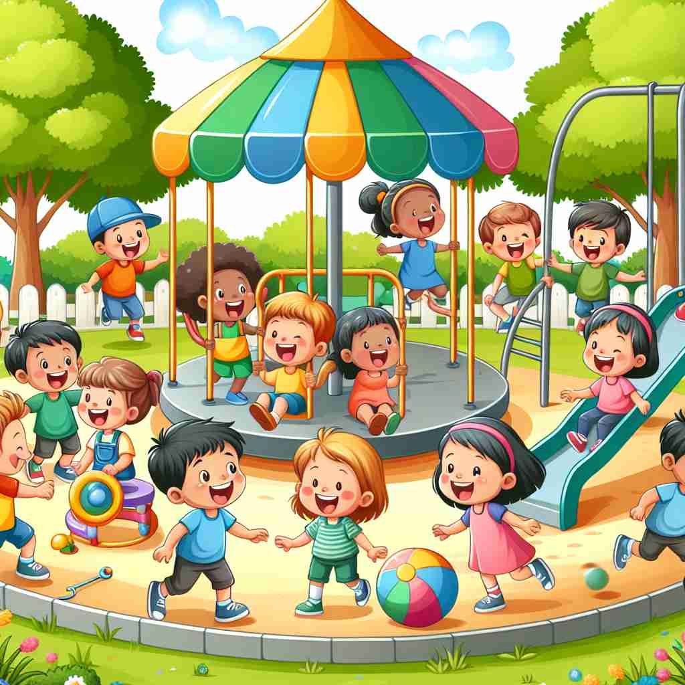

💬 The children like to play in the sandbox during the sunny day.

💬 The child loves to play with a dog in the park.
💬 They like to play a game on rainy days.

💬 The children love to play with friends at the playground.
🔈 [pleɪ]
🗝️ v. to engage in activity for enjoyment or recreation
🖼️ 在一个阳光明媚的公园里，孩子们欢笑着在草地上追逐。他们有的在放风筝，有的在打水仗，享受这无忧无虑的快乐时光。这正是“play”作为享受或娱乐活动参与时的真实写照。
🔍 想象'play'是一个充满乐趣和自由的活动空间。无论是玩游戏、演奏音乐、表演戏剧，还是机器的运作，都可以联想到这个充满活力和创造性的核心概念。这种联想可以帮助你更好地理解和记忆'play'的各种用法，从愉快的娱乐活动延伸到更广泛的行为和功能。
💬 The children like to play in the sandbox during the sunny day.
💬 The child loves to play with a dog in the park.
💬 They like to play a game on rainy days.
💬 The children love to play with friends at the playground.
🌳 基础词汇，没有明显的前缀或后缀。其来源于古英语 'plegian'，意思是进行娱乐或运动。
💡 记忆 'play' 可以通过想象一个人正在享受一场游戏或运动。将其与 'player'（玩家）联系起来，想到参与游戏或活动的人，帮助强化记忆。
🗝️ v. to take part in (a game or sport)
🖼️ 在一个热闹的足球场上，两个队伍正在激烈对抗。球员们专注地奔跑、传球，场边的观众为他们呐喊助威。这展示了“play”作为参与游戏或运动的意义。
💬 He plays football every weekend.
❓ 参与娱乐活动的一种具体形式
🗝️ v. to perform on a musical instrument
🖼️ 黄昏时分，在一个音乐厅里，钢琴家正轻抚琴键，优美的乐声回旋在大厅中。观众凝神聆听，陶醉于音乐的美妙。这诠释了“play”在乐器演奏中的含义。
💬 She plays the piano beautifully.
❓ 将音乐视为一种娱乐活动
🗝️ v. to act in a theatrical performance
🖼️ 舞台灯光亮起，一位演员化身为莎士比亚作品中的角色，娓娓道来她的故事。观众聚精会神地观看，沉浸在精彩的舞台演出中。这是“play”在戏剧表演中扮演角色的生动场景。
💬 He's playing Hamlet in the school production.
❓ 将表演视为一种娱乐活动
🗝️ v. to behave in a particular way
🖼️ 在一个商场中，销售员微笑着与顾客交谈，他的体贴与专业赢得了顾客的信任。这体现了“play”作为在特定场合以特定方式表现的含义。
💬 Stop playing the fool and be serious.
❓ 将某种行为方式视为一种角色扮演
🗝️ v. to operate or function
🖼️ 在一个现代化的厨房里，咖啡机开始运作，轻轻嗡嗡作响，随后热气腾腾的咖啡缓缓滴出。机器正常运转，尽显“play”在工作或运行时的作用。
💬 The video wouldn't play on my old DVD player.
❓ 将机器的运作比作娱乐活动
🗝️ n. a dramatic composition or performance
🖼️ 在一所剧院的海报上，醒目地宣传着当地演出的戏剧作品。一对夫妇兴奋不已，讨论晚上的计划，期待观看这场“play”。这便是“play”作为戏剧作品或表演的定义。
💬 We're going to see a play at the theater tonight.
❓ 从动词演变而来的名词，指娱乐活动的一种形式
🗝️ n. freedom or scope for action
🖼️ 一位公司经理在团队会议上表示：“这个项目的预算给了我们一些灵活性，可以大胆创新。”这指出了“play”在行动自由或空间方面的意义。
💬 The joint has some play in it.
❓ 比喻为自由活动的空间，如同玩耍时的自由